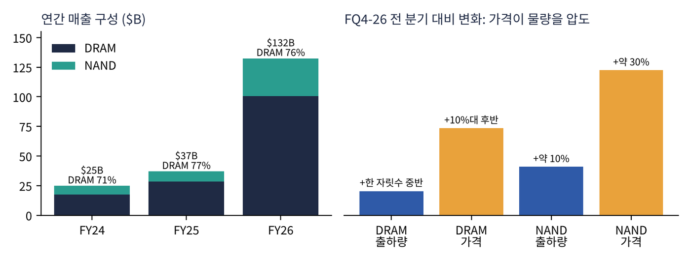

MICRON TECHNOLOGY, INC. · NASDAQ: MU · 심층 기업분석 노트
마이크론 심층 기업분석: 숫자 너머의 회사
자료 마이크론 FY26 4분기 실적 발표 원고(Prepared Remarks, 2026.9.30), FY26 10-K(2026.10.9 제출) 사업·경쟁·제조 부분, FY26 분기 실적 발표문 | 작성일 2026.11.07
앞서 만든 「실적·주가 분석」의 짝이 되는 자료다. 숫자는 꼭 필요한 만큼만 쓰고, 회사가 무엇으로 돈을 벌고, 어디로 가려 하며, 수요를 어떻게 보고 있는지를 경영진의 말과 공시 문장에서 읽어낸다.
한 줄 요약
마이크론은 지금 '값이 출렁이는 원자재(메모리)를 파는 회사'에서 'AI 성능을 결정하는 부품을 장기 계약으로 파는 회사'로 바뀌려 한다. 경영진은 2028년까지 DRAM 공급 부족이 이어진다고 보지만, 성장의 대부분이 물량이 아니라 가격에서 나오고 있다는 점이 이 변신의 가장 큰 시험대다.
핵심 포인트 5가지
- 매출의 정체: 매출 = 비트(저장 용량) 출하량 × 비트당 가격. FY26 매출의 76%가 DRAM이고, 4분기 DRAM 매출 증가분은 대부분 가격 인상(+10%대 후반)에서 나왔다. 출하량 증가는 한 자릿수 중반에 그쳤다.
- 궁극적 목적: ① 범용 제품 → 고객 맞춤형 고부가 제품, ② 경기순환 → 다년 계약 기반 매출, ③ 미국 내 메모리 공급망의 중심. 세 축 모두 '메모리 사이클의 골짜기를 얕게 만드는 것'으로 모인다.
- DRAM 수요 코멘트: 업계 DRAM 비트 출하는 2026년 20%대 중반, 2027~28년 20%대 초반 성장. 두 해 모두 공급이 수요를 못 따라가고, 수급이 언제 균형을 찾을지 "가시권이 없다"고 했다. 서버 대수는 2026·27년 모두 10%대 후반 증가.
- 사업부의 반전: AI의 상징인 HBM이 포함된 클라우드 사업부(CMBU)보다 일반 서버 DRAM을 파는 코어 데이터센터(CDBU)의 마진이 더 높다(90% vs 83%). HBM 공급이 범용 DRAM을 빨아들여 범용 가격이 더 크게 오른 결과다.
- 시험대: 회사는 FY27에 가격 인상 속도가 "더 완만해진다"고 했고, PC·스마트폰 대수는 두 자릿수 감소 가능성을 언급했다. 새 공장은 2027년 중반~2030년에 걸쳐 가동된다. 2028년 전후가 다음 사이클의 분기점이다.
01매출은 어떻게 만들어지나
1-1. 매출 공식: 비트 × 가격
메모리 회사의 매출은 단순하다. 얼마나 많은 저장 용량(비트)을 팔았나 × 비트당 얼마를 받았나. 비트를 늘리는 방법은 두 가지다. 같은 웨이퍼에 더 많이 새기는 공정 전환(마이크론의 1-감마 DRAM, G9 NAND)과 공장(클린룸) 증설이다. 공정 전환은 해마다 조금씩 비트를 늘려주지만, 큰 폭으로 늘리려면 공장을 새로 지어야 하고 2~3년이 걸린다. 그래서 수요가 갑자기 늘면 비트는 못 따라가고 가격이 먼저 뛴다. 지금이 바로 그 국면이다.

FY24 $25B → FY26 $133B로 매출이 5배 넘게 늘었지만, 이 성장의 성격은 FQ4-26 원고에 그대로 드러난다. DRAM은 출하량이 한 자릿수 중반 늘 때 가격이 10%대 후반 올랐고, NAND는 출하량 약 10%에 가격이 약 30% 올랐다. 지금 마이크론의 이익은 '더 많이 팔아서'가 아니라 '더 비싸게 팔아서' 나온다. 이것이 장점이자 약점이다. 가격은 원가 증가 없이 이익으로 직행하지만(FQ4 영업이익률 82%), 방향이 바뀌면 같은 속도로 사라진다.
1-2. 누구에게, 어떻게 파나
- 직접 판매 중심: 자체 영업 조직이 주력이고 유통사·소매점은 보조다. 10-K는 최근 3년 연속 매출의 약 절반이 상위 10개 고객에서 나왔다고 밝힌다. 하이퍼스케일러, 서버 OEM, 스마트폰·PC 제조사, 엔비디아 같은 가속기 업체가 그들이다.
- 고객과의 공동 설계: 제품 수명 초기부터 고객과 사양을 같이 정해 '인증(qualification)'을 받는 구조다. 한번 인증되면 쉽게 바뀌지 않아 기술 세대마다 자리를 선점하는 것이 중요하다.
- 계약 구조의 이중화: 전통적인 단기 계약(가격을 수시로 협상)과, 2026년에 새로 만든 전략적 고객 계약(SCA)이 공존한다. SCA는 다년 테이크 오어 페이(약속 물량을 안 가져가도 대금 지급) 계약이다.
1-3. SCA가 바꾸는 매출의 질
| 항목 | FQ4-26 원고 기준 내용 | 해석 |
|---|
| 계약 수 / 커버리지 | 26건, 2030년까지 매출의 35% 이상 추정. 일부는 2031년까지 연장 | 고객이 '물량 확보'를 위해 장기 약속을 감수할 만큼 공급이 부족하다는 증거 |
| 가격 구조 | 예상 SCA 매출의 3/4은 가격 틀이 정해져 있고, 그중 다수는 하한·상한 밴드. 나머지 1/4은 시장가로 주기적 협상 | 하락기 바닥은 받치지만, 상승기 천장도 생긴다 |
| 잔여 수행 의무(RPO) | 약 $150B. 가격 틀이 정해진 계약만, 최소 가격 기준으로 산정 | 회사는 실제 매출이 RPO를 크게 웃돌 것으로 봄 |
| 고객 재무 약정 | $32B, 대부분 현금 예치금. 분기 말 대차대조표상 예치금 $12.7B. 계약 후반부에 걸쳐 반환 | 고객 돈으로 증설 자금 일부를 미리 받는 셈. 다만 빚 성격이라 FCF에는 안 잡힘 |
| 바닥 가격의 수준 | 하한 가격에서도 과거 어느 사이클 정점보다 높은 마진을 기대 | 경영진이 '사이클의 골짜기를 계약으로 메웠다'고 말하는 근거 |
02회사의 궁극적 목적은 무엇인가
10-K는 회사를 AI와 고성능 컴퓨팅을 클라우드부터 엣지까지 떠받치는 메모리·스토리지 리더로 정의하고, 존재 이유를 "accelerating intelligence to enrich life for all"(지능을 가속해 모두의 삶을 풍요롭게)이라는 문장으로 요약한다. 표어 자체보다 중요한 건 경영진이 실제로 돈과 조직을 어디에 쓰고 있느냐다. 원고와 공시에서 보이는 방향은 세 가지다.
① 원자재 회사 → 차별화 솔루션 회사
CEO는 메모리가 고객 플랫폼의 경쟁력을 좌우하게 되면서 마이크론이 차별화할 기회가 "역사상 어느 때보다 크다"고 했다. 실제 행동도 그렇다. 엔비디아와 업계 첫 커스텀 HBM4E(NVHBM)를 개발 중이고, 서버용 저전력 메모리 모듈(SOCAMM), 512GB 초고용량 DDR5 모듈처럼 '고객 플랫폼에 맞춘' 제품 비중을 늘린다. 반대로 2025년 말에는 소비자용 메모리 브랜드(Crucial) 사업 철수를 발표해 저부가 시장에서 발을 뺐다. 범용 제품은 누가 만들어도 같고 가격으로만 경쟁하지만, 맞춤형 제품은 고객과 묶인다.
② 경기순환 회사 → 계약 기반 회사
메모리는 3~4년마다 호황과 불황이 반복되는 산업이고, 마이크론의 영업이익률은 3년 전 마이너스였다. SCA는 이 패턴을 끊으려는 시도다. 원고는 SCA가 "사업의 변신을 가속한다"고 표현하며, 장기 공급 계획을 정교하게 하고 실적의 지속성·예측 가능성을 높인다고 설명한다. 회사 목표는 계약 완료 시 매출의 절반 이상을 SCA로 채우는 것이다. 동시에 초과 현금의 100%를 장기적으로 주주에게 돌려주겠다고 밝혀, '번 돈을 재투자만 하는 사이클 기업'이 아니라 '현금 흐름을 나누는 우량 기업'으로 평가받고 싶어 한다.
③ 미국 메모리 공급망의 앵커
마이크론은 미국에서 DRAM을 만드는 유일한 대형 메모리 회사다. 아이다호(ID1·ID2), 뉴욕, 버지니아에 공장을 짓고 있으며 원고는 데이터센터·PC·모바일·자동차뿐 아니라 항공우주·국방·의료·휴머노이드 로봇까지 '미국 내 공급 보장'을 강조한다. 지리적으로 분산된 공급, 특히 미국산 DRAM은 경쟁사(한국·중국 중심)가 쉽게 흉내 낼 수 없는 정치적 자산이다.
정리하면, 마이크론의 궁극적 목적은 "메모리를 AI 성능을 결정하는 전략 부품으로 재정의하고, 그 대가를 장기 계약으로 고정해 사이클의 골짜기를 없애는 것"이다. 이 목표가 성공하면 PER 10배 안팎의 경기민감주가 아니라 구조적 성장주로 재평가될 수 있다. 실패하면, 즉 2028년 이후 공급이 쏟아지고 계약 상한·하한이 생각보다 약하면 다시 사이클 기업으로 돌아간다.
03DRAM 수요에 관한 경영진 코멘트
FQ4-26 원고에서 DRAM 수요·공급에 관한 문장을 모두 모아 정리했다.
| 주제 | 경영진 코멘트 (요지) | 읽어야 할 포인트 |
|---|
| 업계 DRAM 비트 성장 | 2026년 20%대 중반, 2027·2028년 20%대 초반. 두 해 모두 공급 제약 상태 지속 | 수요가 아니라 '공급 가능량'이 성장률을 결정 |
| 마이크론 DRAM 공급 | 2026년 업계 성장률과 비슷하게 증가 | 점유율 확대보다 가격 수혜에 집중 |
| 수급 균형 시점 | 업계 클린룸 증설 계획과 고객의 추가 요청을 감안해도 수급 균형 시점이 보이지 않음 | 가장 강한 표현. 단, 회사 입장의 전망임 |
| 구조적 격차 | DRAM 공급 증가율과 수요 증가율 사이에 구조적 격차. 공정 전환만으로는 부족하고 클린룸 추가가 필요 | 2028년 말 이후 새 클린룸이 격차를 좁히기 시작 |
| HBM | 2028년까지 HBM 비트가 일반 DRAM보다 빠르게 성장. 2027년 HBM 물량 대부분을 전년 대비 큰 폭의 가격 인상으로 계약 완료, 일반 DRAM과의 마진 격차가 좁혀짐 | 2027년 HBM 매출은 상당 부분 '확정' 상태 |
| 서버 수요 | 서버 대수 2026·2027년 모두 10%대 후반 증가. 다만 메모리 공급 부족으로 서버당 탑재량 증가율은 기존 예상보다 소폭 낮음 | 수요가 공급에 의해 '배급'되고 있다는 신호 |
| AI 워크로드 | 모델 파라미터 증가, 긴 컨텍스트, 높은 동시 접속이 메모리·스토리지 필요량을 계속 늘림 | 추론(inference) 확대가 수요의 핵심 논리 |
| PC·스마트폰 | 업계 매출은 올해 성장하지만, 전체 출하 대수는 두 자릿수 감소 가능. 고급 제품 중심 수요 | 가격 상승이 일부 수요를 없애기 시작(수요 파괴) |
| 피지컬 AI | 레벨4 이상 자율주행차의 메모리는 통상 200GB 초과로 현재 레벨2~3 차량의 10배 이상. 휴머노이드도 비슷. 2020년대 말 주요 수요원 가능 | 장기 옵션. 지금 매출 기여는 작음 |
| 가격 전망 | FY27은 1분기를 저점으로 마진이 높아지지만 가격 인상 속도는 더 완만해질 것 | 가격 '상승률'의 둔화 = 주가에는 2차 미분 리스크 |
코멘트를 종합한 해석
- 낙관의 근거는 '공급'이다: 경영진의 수요 전망 자체는 서버 10%대 후반, PC·모바일 정체로 폭발적이지 않다. 낙관의 핵심은 공급이 늘지 못한다는 것이다. HBM은 같은 용량을 만드는 데 일반 DRAM보다 웨이퍼를 훨씬 많이 쓰기 때문에, HBM이 늘수록 일반 DRAM 공급이 줄어든다.
- 수요는 이미 공급에 맞춰 깎이고 있다: '서버당 탑재량 증가가 예상보다 낮다', 'PC·폰 대수 두 자릿수 감소'라는 표현은 고객이 메모리를 원하는 만큼 못 사고 있거나, 비싸서 덜 사고 있다는 뜻이다. 공급이 풀리는 순간 억눌린 수요가 터질 수도 있지만, 반대로 비싼 가격에 적응한 고객이 탑재량을 줄인 채 굳을 수도 있다.
- 회사 스스로 증설을 늘린다: '수급 균형이 안 보인다'면서 FY27 설비투자를 늘리고, 증가분 대부분을 2028년 말 이후 클린룸을 앞당기는 건설비에 쓴다. 경쟁사도 같은 판단을 하면 2028~2030년에 공급이 한꺼번에 늘어날 수 있다. 메모리 역사에서 '이번엔 다르다'는 대개 증설 경쟁으로 끝났다.
- 11월 급락과의 연결: 시장은 경영진 코멘트를 부정한 게 아니라, AI 데이터센터 투자 속도(=수요의 원천)에 대한 정치적 불확실성을 할인했다. 마이크론의 수요 논리는 '공급 부족'이고, 그 전제는 '하이퍼스케일러가 계속 짓는다'이다.
04사업 부문 심층 분석
마이크론은 2025년부터 제품(DRAM/NAND)이 아니라 고객 시장 기준 4개 사업부로 보고한다. 같은 DRAM이라도 누구에게 파느냐로 성격이 달라진다는 판단이다.
클라우드 메모리 (CMBU) · 매출 30%
무엇을: 하이퍼스케일러(아마존·구글·MS·메타 등)에 HBM, 고용량 서버 DRAM, 데이터센터 SSD.
FQ4: 매출 +18% QoQ, 매출총이익률 83%로 전 분기와 같음. 가격은 올랐지만 상대적으로 마진이 낮은 HBM 비중이 커져 상쇄.
핵심: HBM4 대량 출하, 엔비디아용 커스텀 HBM4E. 2027년 HBM 물량 대부분 가격 인상으로 계약. 'AI 메모리' 이미지의 중심이지만 이익률은 4개 사업부 중 가장 낮다.
코어 데이터센터 (CDBU) · 매출 33%
무엇을: 델·HPE 같은 서버 OEM과 일반 기업에 표준 서버 DRAM, SSD, 서버용 LPDDR(SOCAMM).
FQ4: 매출 +56% QoQ로 4개 중 최고 성장, 매출총이익률 90%(+2.9%p). 가격 상승과 유리한 제품 구성.
핵심: 2년 전만 해도 이익률 20%대였던 '조연'이 최대 사업부가 됐다. HBM이 웨이퍼를 가져가며 범용 서버 DRAM이 가장 귀해진 결과. 반대로 범용 가격이 꺾이면 가장 먼저 영향받는 곳이기도 하다.
모바일·클라이언트 (MCBU) · 매출 24%
무엇을: 스마트폰용 LPDDR·UFS, PC용 DRAM·SSD.
FQ4: 매출 +14%, 매출총이익률 90%. 가격 상승이 출하량 감소를 덮었다.
핵심: 매출의 약 절반이 최신 1-감마 제품. 온디바이스 AI가 탑재량을 늘리지만 대수는 두 자릿수 감소 가능. 2025년 초 영업이익률 1%까지 갔던, 사이클에 가장 민감한 사업부다. 가격이 수요를 죽이는지 가장 먼저 보여주는 '탄광 속 카나리아'.
오토·임베디드 (AEBU) · 매출 13%
무엇을: 자동차(ADAS·자율주행·인포테인먼트), 산업용 IoT, 로봇, 소비자 기기용 메모리.
FQ4: 매출 +47%, 매출총이익률 84%(+4.7%p). 가격과 출하량 모두 증가.
핵심: 자동차용 1-감마 LPDDR5, G9 기반 UFS 4.1 양산. 레벨4 차량 1대에 200GB 이상의 메모리. 자동차 고객은 보통 3년짜리 SCA를 맺어 안정성이 높다. 피지컬 AI라는 장기 옵션을 품은 사업부.
NAND와 데이터센터 SSD: 숨은 두 번째 엔진
FQ4 데이터센터 SSD 매출은 약 $10B로 1년 전의 10배를 넘었고, NAND 매출의 2/3 이상이다. 동력은 두 가지다. 첫째, AI 추론에서 GPU 메모리에 다 못 담는 대화 맥락 데이터(KV 캐시)를 SSD로 넘기는 'AI 컨텍스트 메모리 스토리지'. 둘째, 데이터센터에서 하드디스크(HDD)를 SSD로 대체하는 흐름. 회사는 2026년 데이터센터 SSD 점유율이 5년 연속 사상 최고를 기록할 것으로 본다. NAND는 그동안 마이크론의 '아픈 손가락'이었는데, AI가 NAND까지 데이터센터 제품으로 바꿔놓았다.
포트폴리오 관점 요약
| 사업부 | 성장 동력 | 사이클 민감도 | 계약 안정성 | 한 줄 평가 |
|---|
| CMBU | HBM, AI 학습·추론 | 중간 | 높음 (HBM 연간 계약) | 가장 '확정된' 매출, 마진은 상대적으로 낮음 |
| CDBU | 범용 서버 DRAM 부족, SSD | 높음 | 중간 | 지금 가장 많이 버는 곳, 가격 반전 시 가장 취약 |
| MCBU | 온디바이스 AI, 프리미엄 | 매우 높음 | 낮음 | 수요 파괴의 조기 경보 |
| AEBU | 자율주행, 로봇, 산업 | 낮음~중간 | 높음 (3년 계약) | 규모는 작지만 가장 긴 성장 스토리 |
05경쟁 구도와 마이크론의 위치
10-K가 이름을 든 경쟁사는 삼성전자, SK하이닉스, 키옥시아, 샌디스크, 그리고 중국의 CXMT(DRAM)·YMTC(NAND)다. 공시는 경쟁사가 점유율을 위해 공격적 가격을 쓸 수 있고, 중국 정부 지원을 받는 업체들의 투자가 과잉 공급을 부를 수 있다고 경고한다. 또 2023년 중국 사이버공간관리국(CAC)이 중국 핵심 정보 인프라 운영자의 마이크론 제품 구매를 막은 결정도 위험 요인으로 남아 있다.
| 비교 축 | 마이크론의 강점 | 마이크론의 약점·위협 |
|---|
| 기술 | 업계 첫 1-감마(EUV 적용) DRAM 양산, 4분기 DRAM 비트 생산 대부분이 1-감마. 차세대 노드 2027년 하반기 양산 목표 | HBM 시장 선두는 SK하이닉스. 삼성의 HBM4 인증 진척 시 가격 경쟁 |
| 지리 | 미국·일본·싱가포르·대만·말레이시아·중국·인도에 생산 거점. 미국산 DRAM은 유일 | DRAM 생산이 대만에 크게 집중. 대만 타오위안 신규 팹 노사 갈등 보도 |
| 고객 | 엔비디아 커스텀 HBM, 하이퍼스케일러 SCA | 상위 10개 고객이 매출 절반. 소수 고객의 투자 계획에 민감 |
| 중국 | - | CXMT·YMTC의 저가 공세, CAC 구매 제한 |
06공급·제조 전략: 언제 공급이 늘어나나
공급 부족이 이 사이클의 엔진이라면, 마이크론의 증설 일정표는 사이클이 언제 식기 시작할지를 알려주는 달력이다. 원고는 새 공장의 생산이 첫 출하 후 몇 분기가 지나야 의미 있는 규모가 된다고 덧붙였다.
| 시점 | 시설 | 내용 |
|---|
| 2027년 초 | 싱가포르 HBM 첨단 패키징 | 클린룸 준비가 계획보다 앞섬 |
| 2027년 중반 | 미국 아이다호 ID1 / 대만 퉁뤄 | ID1 웨이퍼 생산 시작, 퉁뤄 의미 있는 출하 |
| 2027년 하반기 | 차세대 DRAM·NAND 노드 | 양산 시작 목표 (비트 증가 효과) |
| 2028년 하반기 | ID2 / 일본 DRAM 확장 / 싱가포르 NAND | 순차적 생산 시작 |
| 2030년 | 뉴욕 1호 팹 | 첫 웨이퍼 생산 예정 |
| 미정 | 대만 타오위안 신규 팹 | 11월 노사 갈등으로 공사 대부분 중단 보도 |
설비투자는 FY26 순 $27.4B에서 FY27 상반기에만 약 $25B, 하반기는 더 늘어난다. 회사는 장비보다 건설 투자 증가율이 훨씬 높을 것이라고 했다. 즉 지금 쓰는 돈의 상당 부분은 2028년 이후에 생산으로 나타난다. 경영진은 수요에 맞춰 장비 투입을 조절하겠다며 '규율'을 강조했지만, 2028~2029년은 마이크론과 경쟁사의 신규 공급이 동시에 나오는 구간이다.
07조직과 자본 배분
- 경영진 개편: 마니시 바티아를 사장 겸 COO로 임명해 사업부·글로벌 운영과 손익을 맡기고, 스콧 드부어를 사장 겸 최고기술·제품책임자로 임명해 기술 로드맵과 연구소를 맡겼다. 수요에서 공급까지 한 사람이 결정하게 해 의사결정 속도를 높이려는 구조다.
- 보상: FY26 성과급을 전 직원 대상으로 올리고 지역사회에 $300M를 출연했다. 이 때문에 4분기 영업비용이 $1.1B 늘었고, 제조 인력 성과급 일부는 재고로 들어가 FQ1-27 매출총이익률을 누른다(그래서 회사는 FQ1을 FY27 마진의 저점으로 제시).
- 재무 체력: 현금·투자 $73.5B, 부채 $5.2B, 순현금 $68.3B. 3대 신용평가사 모두 BBB+ 이상으로 상향.
- 주주환원: CHIPS법 계약 2주년인 12월 9일부터 환원 확대, 장기적으로 초과 현금 100% 환원 목표.
08종합 인사이트: 마이크론은 무엇에 베팅하는가
"메모리는 여전히 사이클 산업인가?" 마이크론의 모든 전략은 이 질문에 "아니다"라고 답하기 위해 설계됐다. 맞춤형 HBM으로 고객과 묶이고, SCA로 가격 바닥을 계약하고, 미국 공급망이라는 정치적 해자를 쌓고, 남는 현금은 주주에게 돌려준다.
그런데 공시와 원고를 뜯어보면 아직 '사이클의 문법'이 강하게 남아 있다.
- FQ4 성장은 대부분 가격이었고, 가장 이익률이 높은 곳은 맞춤형 HBM이 아니라 범용 제품을 파는 사업부들이다.
- SCA는 2030년까지 매출의 35%를 덮는다. 바꿔 말하면 65%는 여전히 시장 가격에 노출돼 있다.
- 회사 스스로 FY27 가격 인상 속도 둔화를 예고했고, 대규모 클린룸이 2028년부터 열린다.
결국 마이크론의 투자 논리는 두 개의 시계로 나뉜다. 2027년까지의 시계는 HBM 계약 완료, 공급 부족, 가격 상승으로 실적이 거의 '보이는' 구간이다. 2028년 이후의 시계는 SCA가 얼마나 단단한 바닥인지, AI 투자가 공급 증가를 흡수할 만큼 계속되는지에 달린 구간이다. 지금 주가의 변동성은 시장이 두 번째 시계를 미리 읽으려 하기 때문이다.
이 회사를 좋게 볼 이유
- 2027년 HBM 물량 대부분 가격 인상으로 계약 완료
- RPO $150B·예치금 $32B라는 '계약된 수요'
- 미국산 DRAM, 1-감마 기술 선도
- 순현금 $68B와 100% 초과 현금 환원 방침
경계할 이유
- 성장의 대부분이 가격, 그 상승률은 둔화 예고
- PC·폰 대수 감소 = 수요 파괴의 시작 가능성
- 2028년 이후 업계 동시 증설, 중국 업체 추격
- 상위 10개 고객 의존, 대만 생산 집중
앞으로 확인할 체크리스트
- 가격 vs 물량: 다음 분기 원고에서 DRAM 가격 상승률(4분기 10%대 후반)이 얼마나 낮아지는지, 비트 출하가 그만큼 늘어나는지
- SCA 진척: 커버리지가 35% → 50%로 가는지, 새 계약의 가격 밴드가 더 높은 수준에서 체결되는지(회사는 신규 협상은 더 높은 가격으로 한다고 언급)
- MCBU 출하량: 모바일·PC 비트 출하 감소가 이어지는지(수요 파괴 신호)
- HBM 마진 격차: CMBU 마진이 CDBU를 따라잡는지(2027년 HBM 가격 인상 효과)
- 증설 규율: 경쟁사 설비투자 발표와 마이크론의 장비 투입 속도
09정리하며 발견한 확인 필요 사항
- HBM 마진이 범용보다 낮다는 점: 원고는 CMBU 마진이 HBM 비중 증가로 정체했다고 밝혔다. 'AI 메모리 = 최고 마진'이라는 통념과 다르며, 2027년 가격 인상으로 격차가 좁혀진다는 것이 회사 설명이다.
- RPO와 이전 수치: 3분기 시점 보도에는 14개 계약의 최소가 기준 누적 매출 약 $100B, 예치금 약 $22B로 나왔다. 4분기에는 계약 26건, RPO 약 $150B, 재무 약정 $32B로 늘었다. 산정 범위가 달라 단순 비교는 어렵다.
- 'Super Intelligence' 표현: 경영진은 AI가 슈퍼 인텔리전스로 진화한다는 프레임을 반복한다. 마케팅 성격이 있는 표현이므로 수치 전망과 구분해서 읽어야 한다.
- 대만 설비: 원고의 퉁뤄 시설(2027년 중반 출하)과 11월 보도된 타오위안 신규 팹(공사 중단)은 별개 프로젝트다. 타오위안 중단이 장기 공급 계획에 미칠 영향은 다음 실적 발표에서 확인이 필요하다.
- 소비자 사업 철수: Crucial 브랜드 철수(2026년 2월까지 출하 종료)는 보도 기준이며, 이번 원고에서는 다루지 않았다.
출처: Micron FQ4-26 Earnings Call Prepared Remarks(2026.9.30, investors.micron.com), Micron FY26 Form 10-K(2026.10.9) Item 1 사업·경쟁·제조 부분, Micron FY26 분기 실적 발표문, Trefis·Kalkine·FXLeaders 보도(SCA 초기 수치, 대만 팹, 소비자 사업 철수). 영문 인용은 짧게 표시했고 나머지는 요약·번역이다. 이 자료는 개인 학습용 분석이며 특정 종목의 매수·매도를 권유하지 않습니다. 투자의 책임은 개인에게 있습니다.